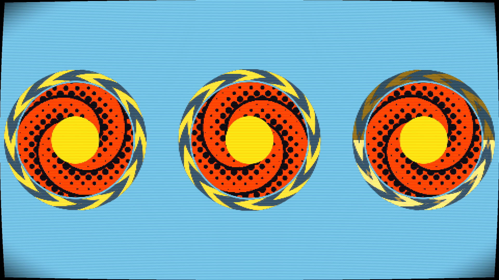

Şimdiki spiral (turuncu halftone noktalar + sarı diş halkası + siyah kollar + sarı göbek) çamur olmuş: hipnotize eden tek şey yok, her şey birbirinin üstüne binmiş. Burada altı farklı bakış açısıyla araştırdım: her biri bir sanat ya da algı fikrini en aza indirip 2 renkli, düz dolgulu bir spirale çevirdi. Üstteki çubuktan yönü ve hızı değiştir, bir karta tıkla, aşağıdaki sahnede oyun ölçeğinde gör.
Işığa duyarlılık: hız çubuğu en çok 720°/s. 60 fps'te 610°/s kare başına ~10°. Tekrar sayısı çok olan desenler bu hızda "vagon tekerleği" etkisiyle titrer; kartlarda bunu ayrıca not ettim.

Dört ayrı fikir üst üste: halftone nokta, kıvrık kol, diş halkası, göbek. Gözün kilitleneceği tek şey yok.
Küçük sarı disk (1 birim) + etrafında 10 halka, dışa doğru sönen halo. Spiral bu ailenin kuzeni gibi durmalı.
Her kart canlı. Altındaki iki küçük kare dönmeyen kare: soldaki saat tersi, sağdaki saat yönü. Yön o karede okunuyor mu diye bak. Karta tıklayınca aşağıdaki sahnede seçilir.
Spiral görseli oyunda ~3 birim, oyuncu ~1 birim. Seçili tasarım, yanında normal node ve ip boyu 3 birimle dönen oyuncuyla. Hız çubuğu burayı da sürüyor.